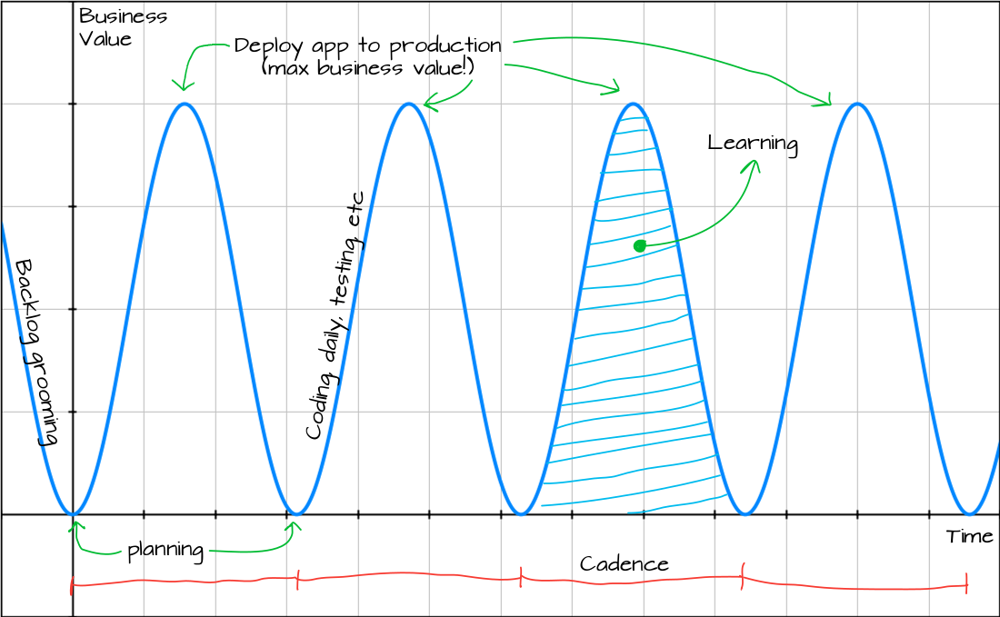

Sinusoide de la entrega de productos
Por Yuji KirikiEn esta entrada busco describir una forma eficiente de explicar los conceptos que considero relevantes de un proceso de software orientado a entregar productos: cadencia, aprendizaje, predictibilidad, generación de valor, iterativo e incremental.
Esta forma de explicar los conceptos es una amalgama de muchísimas fuentes que he leído durante los años. Por favor ayúdenme a identificar si estoy fusilando sin crédito a alguien.
La sinusoide
La gráfica presenta dos dimensiones: generación de valor de negocio (y) y tiempo (x).

Cada onda de la sinusoide representa el ciclo de entrega de valor de negocio en el tiempo. Eso quiere decir que a medida que se van completando ciclos, se va generando valor en el tiempo.
Generación de valor
Cada onda que conforma la sinusoide tiene como punto máximo de generación de valor una salida a producción del producto en construcción. Entre el punto 0 de generación de valor de cada onda y la salida a producción ocurren, podría ser, cada una de las ceremonias de Scrum: planeación, reunión diaria, etc. A medida que va pasando el tiempo, a través de la curva de la onda se va acumulando generación de valor mas no se ha generado valor.
Esto significa que la planeación tiene una generación de valor igual a cero. Codificar, crear pruebas, hacer reuniones diarias, etc, solo nos llevan a acumular valor mas no a entregarlo. El único punto de entrega tangible de valor se da en el máximo local de la función, es decir, cuando el producto sale a producción.
Esta representación implica que entre menos tiempo pase entre un commit de un desarrollador hasta la puesta a producción de esas líneas de código, más rápido se le puede entregar valor al negocio.
En consecuencia cualquier mejora que se pueda hacer entre esos dos puntos fomentan la rápida generación de valor que es el fin último de un proceso de construcción de productos de software.
Para acortar la distancia entre un commit y la puesta a producción se debe propender por automatizar todo tipo de actividades sujetas a ello, tales como: ejecución pruebas unitarias, de aceptación, de capacidad o aprovisionamiento de infraestructura. Recuerden, si duele debe hacerse más seguido.
Esta línea de ideas implica también que prácticas de CI/CD son fundamentales para tener ciclos que generan valor. Y no, tener Jenkins instalado no es igual a estar haciendo CI/CD.
Según la gráfica, una actividad como el backlog grooming solo nos ayuda para tomar impulso para la siguiente acumulación de valor mas no genera valor de negocio alguno.
Otra característica de la gráfica es que permite explicar porqué los ciclos de entrega a producción se deben hacer en ciclos cortos. Entre más tiempo pasa entre paso a producción y paso a producción (entre más grande es el intervalo en x) más acumulación de valor se hace, pero menos se entrega al negocio.
En este último punto hay una relación bien curiosa: entre más se acumula valor en el tiempo, menos probable es que ese valor sea capitalizado por el negocio.
Cadencia
Dada la gráfica, es fácil explicar que el objetivo de un proceso de desarrollo valioso es hacer que la generación de valor sea frecuente y que en lo posible genere un valor de negocio incremental.
Mantener esta frecuencia generando un valor de negocio proporcional nos induce al ritmo que un equipo debe mantener para ser predecible.
Ser predecible es quizás una de las características más necesarias de un proceso incremental-iterativo, pues permite mitigar riesgos y alinear expectativas de los interesados (stakeholders) del producto (además de generar mucho aprendizaje).
Entre más alta sea la frecuencia de la gráfica más frecuentemente se entrega valor al negocio. Al obligar a un equipo a entregar de manera frecuente, el equipo debe desarrollar las habilidades y mecanismos que le permitan llegar alcanzar su inercia. Este “desarrollar” dependerá del aprendizaje que se pueda capitalizar en el ciclo.
Sin embargo se debe ser sabio a la hora de definir la razón entre generación de valor (dimensión en y) y el tiempo necesario para hacerlo (dimensión x), haciendo la cadencia sea una métrica de salud de un producto y un equipo.
La cadencia se denota en la gráfica cada vez que la función llega a 0 en el eje y. Si el intervalo de tiempo (timebox) es el mismo, se fomenta una cadencia comparable entre ciclo y ciclo. Es inclusive posible pensar que se puede medir en términos del periodo de la gráfica.
Aprendizaje
Si cada entrega a producción es el máximo local de generación de valor, cada vez que la gráfica toca 0 se considera que un ciclo de generación de valor ha terminado (muy seguramente con una retrospectiva). El área de cada ciclo puede considerarse el aprendizaje capitalizado por el equipo y su entorno.
Esto significa que, sí y solo sí es el mismo equipo y el mismo entorno, así como la generación de valor, el aprendizaje se capitalizará con cada puesta a producción.
Consecuencias de la gráfica
Como podrán imaginarse, las ondas de la gráfica no deben ser siempre iguales. Esto rompe la definición misma de una sinusoide. Sin embargo el título queda más vendedor así ¿cierto?
La amplitud máxima por onda puede determinarse por puntos de esfuerzo obtenidos en el Sprint, por ejemplo. Eso quiere decir que a medida que va pasando el tiempo y la gráfica se va completando, podemos empezar a identificar la cadencia del equipo (y quizás calcularla por su periodo).
La primera consecuencia es que queda más simple explicarle al negocio porqué se deben automatizar todo tipo de actividades que estén entre la ceremonia de planeación y la salida a producción de la aplicación.
Cualquier traba (infraestructura, SOX, auditoria, etc) que se le ponga al ciclo va en detrimento de la generación de valor. No estoy diciendo que se deban eliminar, solo que todas esas trabas son altamente automatizables.
Segunda consecuencia es la necesidad de adquirir cadencia basada en ciclos de tiempo idénticos, capitalizando el aprendizaje generado entre salida y salida a producción.
La tercera consecuencia es que toda actividad que no sea orientada a desplegar a producción se debe considerar como gasto y no inversión dentro del proceso de desarrollo. Cualquier ceremonia, reunión, actividad, mesa de trabajo, etc, que un proceso de desarrollo se invente va en detrimento de la generación de valor (tal como SAFey sus amigotes).